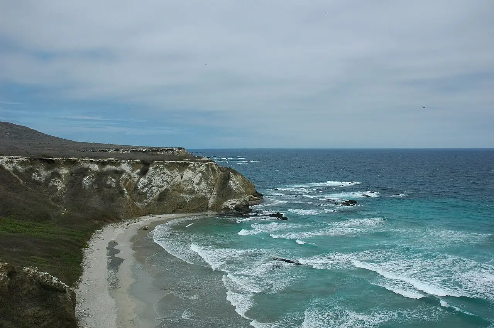

Isla de la Plata
Manabí, Équateur · snorkeling

Île du parc national Machalilla, à une quarantaine de kilomètres de Puerto López, surnommée la « Galápagos du pauvre » pour ses fous à pattes bleues. Le snorkeling se fait au-dessus d’un petit récif près du mouillage.
- Lieu
- Manabí, Équateur
- Niveau
- Débutant
- Activités
- snorkeling
- Type d'eau
- Mer / océan
- Coordonnées
- -1.28, -81.07 (position approximative du secteur)
Dangers à connaître
- Traversée en haute mer, souvent agitée.
- Parc national : visite uniquement avec un guide agréé.
Le conseil d'Ocean Buddy
Entre juin et septembre, la traversée coïncide avec la saison des baleines à bosse : ouvre l’œil pendant le trajet.
Ouvrir dans Ocean Buddy Télécharger sur l'App Store
Source : Fiche Ocean Buddy · septembre 2026 · à vérifier localement.